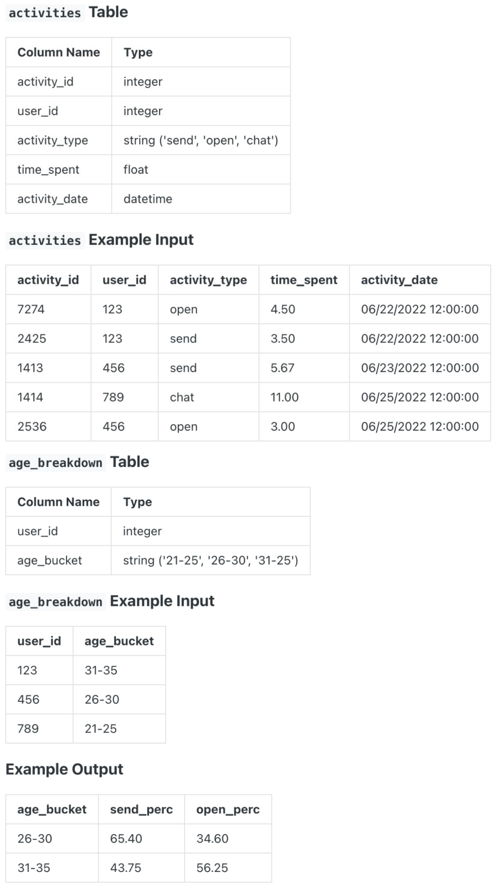

Question sourced from DataLemur.com.
Database: PostgreSQL
Assume you're given tables with information on Snapchat users, including their ages and time spent sending and opening snaps.
Write a query to obtain a breakdown of the time spent sending vs. opening snaps as a percentage of total time spent on these activities grouped by age group. Round the percentage to 2 decimal places in the output.

/*
My strategy: Create a CTE joining activities with age_breakdown.
Create a second CTE grouping by age_bucket, and deriving columns
for total time spent opening snaps, closing snaps, and total time
doing both. Finally, derive columns for percent time opening vs.
closing snaps.
*/
WITH activities_by_age AS (
SELECT ab.age_bucket, a.activity_type, a.time_spent
FROM activities a
JOIN age_breakdown ab ON a.user_id = ab.user_id
WHERE a.activity_type IN ('send', 'open')
),
activity_totals AS (
SELECT age_bucket,
SUM(time_spent) AS total_time,
SUM(CASE WHEN activity_type = 'send' THEN time_spent ELSE 0 END) AS total_send,
SUM(CASE WHEN activity_type = 'open' THEN time_spent ELSE 0 END) AS total_open
FROM activities_by_age
GROUP BY age_bucket
)
SELECT age_bucket,
ROUND((total_send / total_time) * 100.0, 2) AS send_perc,
ROUND((total_open / total_time) * 100.0, 2) AS open_perc
FROM activity_totals;